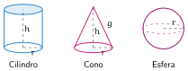

Apartado 12.3
Cuerpos de revolución
Los cuerpos de revolución se obtienen al girar una figura plana alrededor de un eje: un rectángulo genera un cilindro, un triángulo rectángulo genera un cono y un semicírculo genera una esfera.

12.3.1
Un depósito cilíndrico tiene \(1\) m de radio y \(2\) m de altura. ¿Cuántos litros caben?